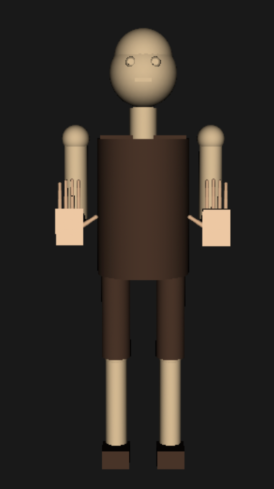

Dual Robotic Hands
Two 5-finger robotic hands rendered side by side in RViz2. Supports combined finger counting from 0–10 (split automatically across both hands), two-character word spelling, and independent per-hand ASL letter and gesture control.
Setup
Step 1 — Build the image
docker build -t arm-sim .Step 2 — Run the container
# Mac
docker run -it --name arm-sim -p 5900:5900 arm-sim
# Windows
docker run -it --name arm-sim -p 5900:5900 --security-opt seccomp=unconfined arm-simStep 3 — Connect via VNC
# Mac — open VNC Viewer, connect to:
localhost:5900
# Windows PowerShell
& "C:\Program Files\RealVNC\VNC Viewer\vncviewer.exe" localhost:5900Leave the password blank. Use Scale to fit in VNC Viewer to resize the desktop.
Container management
docker stop arm-sim # stop
docker start -ai arm-sim # restart & attach
docker exec -it arm-sim bash # open second terminal
docker rm arm-sim # remove container (keeps image)
# Rebuild after code changes
docker rm -f arm-sim && docker build -t arm-sim . && docker run -it --name arm-sim -p 5900:5900 arm-simsudo apt install \
ros-jazzy-robot-state-publisher \
ros-jazzy-joint-state-publisher \
ros-jazzy-joint-state-publisher-gui \
ros-jazzy-rviz2 \
ros-jazzy-xacro
rosdep install --from-paths src --ignore-src -r -y
colcon build --symlink-install
source install/setup.bashLaunch & Commands
Launch
ros2 launch arm_simulation dual_hands.launch.pyOpen a second terminal in the container for sending commands:
docker exec -it arm-sim bash
source install/setup.bashCombined finger count (0–10)
Automatically splits across both hands — e.g. 8 → left=5, right=3.
ros2 topic pub /finger_count std_msgs/msg/Int32 "{data: 0}" --once # fists
ros2 topic pub /finger_count std_msgs/msg/Int32 "{data: 5}" --once # one hand open
ros2 topic pub /finger_count std_msgs/msg/Int32 "{data: 8}" --once # left=5, right=3
ros2 topic pub /finger_count std_msgs/msg/Int32 "{data: 10}" --once # both hands openTwo-character word spelling
Right hand = first character, left hand = second.
ros2 topic pub /letter_command std_msgs/msg/String "{data: hi}" --once
ros2 topic pub /letter_command std_msgs/msg/String "{data: go}" --once
ros2 topic pub /letter_command std_msgs/msg/String "{data: it}" --onceSingle letter — both hands
ros2 topic pub /letter_command std_msgs/msg/String "{data: a}" --once
ros2 topic pub /letter_command std_msgs/msg/String "{data: z}" --onceIndependent per-hand control
# Gestures
ros2 topic pub /left/gesture_command std_msgs/msg/String "{data: v}" --once
ros2 topic pub /right/gesture_command std_msgs/msg/String "{data: a}" --once
# ASL letters
ros2 topic pub /left/letter_command std_msgs/msg/String "{data: l}" --once
ros2 topic pub /right/letter_command std_msgs/msg/String "{data: r}" --once
# Finger count
ros2 topic pub /left/finger_count std_msgs/msg/Int32 "{data: 3}" --once
ros2 topic pub /right/finger_count std_msgs/msg/Int32 "{data: 5}" --onceDemo Videos
Numbers (1–10)
Combined finger count from 1 to 10 split across both hands
Alphabet (A–Z)
Full ASL letter sequence across both hands
Humanoid Sign Language Interpreter
A full humanoid robot (~1.5 m tall) that performs American Sign Language signs with coordinated arm, hand, and head motion. Send a single /sign_command and the entire body animates — arms raise to the correct position, fingers form the right shape, and the head follows, all simultaneously.
Humanoid Robot — Full Body View
Rendered in RViz2 with all 38 joints active

System Architecture
| Node | Script |
|---|---|
| Sign Coordinator | humanoid_sign_coordinator.py |
| Body Controller | body_controller.py |
| Left Hand | enhanced_hand_controller.py |
| Right Hand | enhanced_hand_controller.py |
| Dual Hand Coord. | dual_hand_coordinator.py |
Setup
Build & run
docker build -t arm-sim .
docker run -it --name arm-sim -p 5900:5900 arm-simConnect with VNC Viewer → localhost:5900
Leave password blank. Run any launch command and the RViz2 window appears in VNC Viewer.
Rebuild after code changes
docker rm -f arm-sim && docker build -t arm-sim . && docker run -it --name arm-sim -p 5900:5900 arm-simsudo apt install \
ros-jazzy-robot-state-publisher \
ros-jazzy-joint-state-publisher \
ros-jazzy-rviz2 ros-jazzy-xacro
rosdep install --from-paths src --ignore-src -r -y
colcon build --symlink-install
source install/setup.bashLaunch & Commands
Launch
ros2 launch arm_simulation humanoid_robot.launch.pyOpen a second terminal for commands:
docker exec -it arm-sim bash
source install/setup.bashGreetings & social commands
| Command | Description |
|---|---|
| hello | Right arm raises to forehead and sweeps outward |
| bye | Right arm raised, hand waves side to side three times |
| yes | Head nods twice |
| no | Head shakes twice |
| please | Flat hand makes two circles over the chest |
| thanks | Flat hand near chin sweeps forward and down |
| welcome | Both arms spread wide with a slight forward bow |
| sorry | Closed fist makes two circles over the chest |
| come | Arm extends forward then beckons twice |
| stop | Right arm raised, palm facing out — halt signal |
| good | Flat hand near chin sweeps forward and down |
| why | Alternating arm swing with head tilts |
ros2 topic pub -1 /sign_command std_msgs/msg/String 'data: "hello"'
ros2 topic pub -1 /sign_command std_msgs/msg/String 'data: "bye"'
ros2 topic pub -1 /sign_command std_msgs/msg/String 'data: "yes"'Alphabet & numbers
# Individual letters (a–z)
ros2 topic pub -1 /sign_command std_msgs/msg/String 'data: "a"'
ros2 topic pub -1 /sign_command std_msgs/msg/String 'data: "z"'
# Numbers (1–10)
ros2 topic pub -1 /sign_command std_msgs/msg/String 'data: "1"'
ros2 topic pub -1 /sign_command std_msgs/msg/String 'data: "10"' # wrist oscillationFull sequences — one command runs the whole set
ros2 topic pub -1 /sign_command std_msgs/msg/String 'data: "numbers"' # 1→10
ros2 topic pub -1 /sign_command std_msgs/msg/String 'data: "alphabet"' # a→z
ros2 topic pub -1 /sign_command std_msgs/msg/String 'data: "dance_all"' # all 5 dancesDance moves
| Command | Description |
|---|---|
| robot | Stiff mechanical arm snaps with head turns |
| celebrate | Both arms shoot up and wave, jazz hands finish |
| wave | Alternating arm raises — friendly crowd wave |
| groove | Funky alternating arm sweeps with double pump |
| disco | Classic Saturday-Night-Fever alternating diagonal point |
ros2 topic pub -1 /sign_command std_msgs/msg/String 'data: "robot"'
ros2 topic pub -1 /sign_command std_msgs/msg/String 'data: "celebrate"'
ros2 topic pub -1 /sign_command std_msgs/msg/String 'data: "disco"'Manual body control — individual joints
# Raise right arm
ros2 topic pub -1 /body_pose_command std_msgs/msg/String \
'data: "{\"right_shoulder_pitch\": 0.8, \"right_elbow_pitch\": 1.2}"'
# Presets
ros2 topic pub -1 /body_pose_command std_msgs/msg/String 'data: "neutral"'
ros2 topic pub -1 /body_pose_command std_msgs/msg/String 'data: "signing_ready"'Demo Videos
Interaction Commands
hello, bye, yes, no, please, thanks, and more
Dance Moves — All 5
robot → celebrate → wave → groove → disco